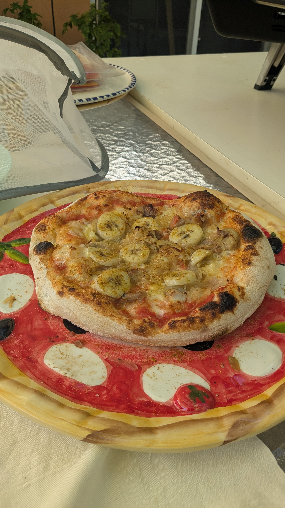

Swedish Banana Curry Pizza

The Swedish curry banana pizza: it's like if a tropical vacation and a pizza had a baby, and that baby had a questionable sense of flavor. Imagine a crispy crust topped with curry sauce, sliced bananas, and maybe some ham for good measure. It’s the sweet, spicy, and downright confusing flavor combo you never knew you didn’t ask for. You’ll either love it or question every decision you’ve ever made—there's no in-between.
Ingredients
- 1 pizza dough (store-bought or homemade)
- 1/2 cup curry sauce
- 1 tablespoon sour cream
- 1 ripe banana
- 1 cup cooked ham
- 1/2 cup grated cheese
Steps
- Preheat the oven: Set your oven to 475°F (245°C), and make sure the pizza stone or baking sheet is in there while it heats up.
- Prepare the dough: Roll out your pizza dough on a lightly floured surface until it's your desired thickness. Grease a baking sheet or pizza stone with a little olive oil, and place the dough on it.
- Prepare the sauce: In a small bowl, mix the curry sauce and sour cream. Spread a thin layer of this sauce all over the pizza dough, leaving about an inch of space around the edges for the crust.
- Layer the toppings
- Bake the pizza: Slide the pizza into your preheated oven. Bake for about 10-12 minutes or until the crust is golden and the cheese is melted and bubbly.
- Garnish & serve: Once out of the oven, you can garnish with fresh cilantro or parsley for a little color and extra flavor. Slice it up, take a deep breath, and dig in.
Home